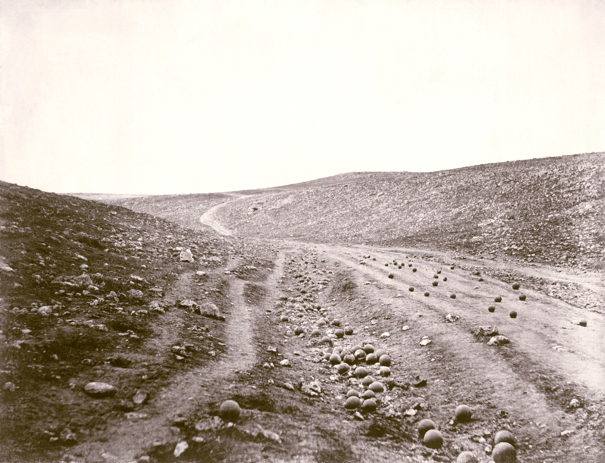

01Крым: рождение профессии
Военные репортёры существовали и раньше, но в 1854 году The Times отправила в Крым Уильяма Говарда Рассела, и его корреспонденции изменили представление о войне. Рассел писал не казённый отчёт, а свидетельство очевидца: он описывал мороз, болезни, плохо организованное снабжение, ошибки командования, а также героизм солдат. Его описание атаки у Балаклавы и "тонкой красной линии" шотландцев вошло в публичную память.
Редактор Джон Делейн поддерживал корреспондента, и публикации вызвали общественное возмущение состоянием армии. Правительство Абердина в 1855 году ушло в отставку, а в стране начались реформы медицинской службы и снабжения. Это был первый случай, когда газетный репортаж повлиял на судьбу кабинета.
02Техника: телеграф, почта, расстояние
Корреспонденции из Крыма шли по почте, пароходом, и приходили в Лондон через недели. С подключением Крыма к телеграфной сети в 1855 году скорость выросла, но короткая телеграмма стоила дорого. Между телеграммой с краткими фактами и письмом с описанием сложилось разделение труда: первое содержало новость, второе картину.
Сам корреспондент был зависим от армии: пользовался её лагерем, лошадьми, разрешениями и защитой. Отсюда конфликт с командованием. Главнокомандующий лорд Реглан возмущался публикациями, потому что они были доступны противнику. Проблема открытых сведений осталась центральной для всей истории военной журналистики.
03Поколение 1870 – 1880-х годов
Во время франко-прусской войны 1870 – 1871 годов и русско-турецкой войны 1877 – 1878 годов появилась новая школа корреспондентов. Арчибальд Форбс (Daily News) известен репортажами о Седане и Плевне. Январий Макгахан, американец, работавший в Daily News, в 1876 году описал расправу над болгарским населением, и это повлияло на английское общественное мнение о восточном вопросе. Бенет Берли, Фредерик Вильерс, Чарльз Уильямс, другие репортёры работали в разных странах мира и ориентировались на конкуренцию между газетами за быстроту доставки текста.
Форбс в мемуарах описывал свой метод: ехать к месту событий самому, искать очевидцев на обеих сторонах, составлять текст сразу и отправлять с курьером или телеграммой. Скорость стала профессиональной ценностью, нередко в ущерб проверке.
04Стилистика
Тексты военных корреспондентов строились по нескольким принципам. Во-первых, повествование от первого лица очевидца: "я видел", "мы выехали". Во-вторых, опора на конкретную деталь: цвет мундиров, звук орудий, качество дороги, слова солдата. В-третьих, последовательное восстановление событий. При этом хронологическое изложение нередко соседствовало с объяснением причин поражения, критикой командования и оценкой военной политики. В-четвёртых, эмоциональная окраска: сочувствие солдату, критика штабов, иногда патриотический пафос.
К концу века стиль усложнился, появились яркие литературные описания. Джордж Уоррингтон Стивенс из Daily Mail, автор книги "С Китченером в Хартум" (1898), описывал битву при Омдурмане как зрелище и одновременно как хронику. Уинстон Черчилль, будучи корреспондентом Morning Post, в 1899 году освещал Англо-бурскую войну и попал в плен. Литературность текстов отражала борьбу массовой прессы за аудиторию.
05Корреспондент и армия: цензура
К концу столетия командование научилось ограничивать журналистов. В Судане генерал Китченер ввёл строгие правила аккредитации и ограничил свободу корреспондентов. В Англо-бурской войне была введена цензура телеграмм, а телеграфные линии контролировала армия. Лорд Уолсли, главнокомандующий, был известен недоверием к журналистам.
Спор между армией и прессой касался двух вопросов: кто решает, что публикуется, и кто несёт ответственность за утечку информации. Компромисс состоял в системе аккредитации и предварительной проверки сообщений, которая сохранилась в XX веке.
06Фотография и иллюстрация
Параллельно с текстом развивалась визуальная фиксация войны. Роджер Фентон сделал в Крыму в 1855 году фотографии лагерей и пейзажей, но не боёв: съёмка требовала длительной экспозиции. Поэтому читатель видел войну преимущественно на гравюрах, подготовленных иллюстраторами по рисункам очевидцев, в изданиях вроде Illustrated London News. Это ещё одна форма сообщения, влиявшая на образ войны.

07Как работал корреспондент: порядок дня
Корреспондент собирал материал на месте: беседовал с офицерами и солдатами, осматривал позиции, сопровождал колонны. Затем он писал текст в палатке или на привале, иногда ночью, и передавал его через курьера на ближайший телеграф или к порту. Из-за расстояний и стоимости связи крупные репортажи отправляли почтой, а телеграмму ограничивали несколькими десятками слов с главным результатом.
Конкуренция между газетами подталкивала к рискованным поездкам и гонке за первенство. Корреспондент зависел от личных связей с генералами и штабными офицерами, и эта зависимость порой смягчала критику. Лучшие репортёры сохраняли независимость, но платили за это отношениями с командованием.
08Читатель и общественное мнение
Репортажи с войны читали в семьях и клубах, цитировали в парламенте. Газеты создали образ армии, понятный гражданскому читателю: солдат, терпящий лишения, и штабы, допускающие ошибки. Этот образ влиял на политику, финансирование и реформы. Рассказы о недостатках снабжения в Крыму привели к реорганизации военного управления, а сообщения о зверствах в Болгарии в 1876 году повлияли на настроения британского общества в отношении Османской империи.
Одновременно корреспонденции формировали имперскую романтику: колониальные войны изображались как приключение. Критики отмечают, что подобная манера скрывала жестокость колониальных кампаний и представляла противника как безликого врага.
Даты и события
- 1854Рассел отправляется в Крым
- 1855Отставка кабинета Абердина, телеграф и фотографии Фентона
- 1870 – 1871Франко-прусская война, Форбс
- 1876Макгахан о Болгарии
- 1877 – 1878Русско-турецкая война
- 1898С Китченером в Хартум, Омдурман
- 1899 – 1902Англо-бурская война, цензура
Убедительность военного репортажа складывалась из конкретной сцены и доверия к очевидцу. Его слабость была обратной стороной того же метода: ограниченный обзор, давление армии и желание успеть раньше конкурента. Эти противоречия видны уже у корреспондентов XIX века.
Источники и материалы для чтения
- Library of Congress. Фотографии Роджера Фентона в Крыму ↗
- Р. Фентон. Портрет корреспондента У. Г. Рассела, 1855 ↗
- Р. Фентон. The Valley of the Shadow of Death, 1855 ↗
- Арчибальд Форбс. Memories of War and Peace, 1895. Библиографическое описание в литературе ниже ↗
Книги и научная литература
- Knightley P. The First Casualty: The War Correspondent as Hero and Myth-Maker from the Crimea to Iraq. London: Prion, 2000 (первое изд. 1975).
- Lambert A., Badsey S. The War Correspondents: The Crimean War. Stroud: Alan Sutton, 1994.
- Hudson M., Stanier J. War and the Media: A Random Searchlight. Stroud: Sutton, 1997.
- Russell W. H. The British Expedition to the Crimea. London: Routledge, 1858.
- Forbes A. Memories of War and Peace. London: Cassell, 1895.
- Steevens G. W. With Kitchener to Khartum. Edinburgh: Blackwood, 1898.